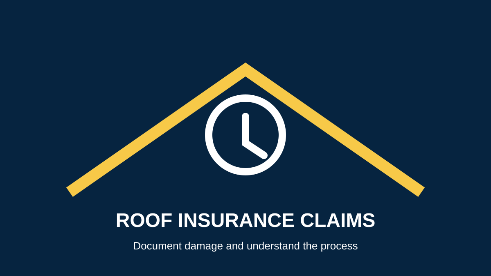
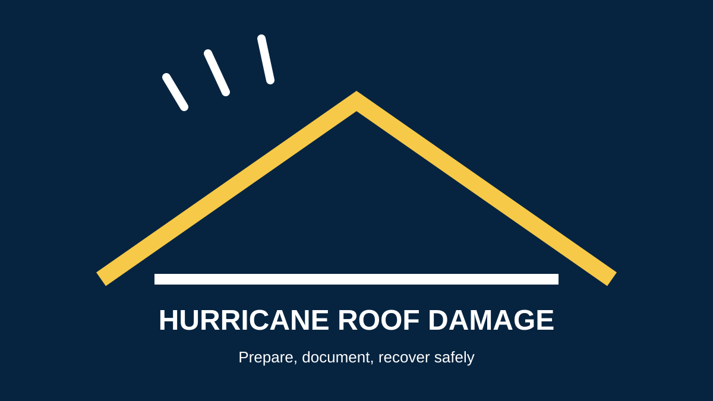
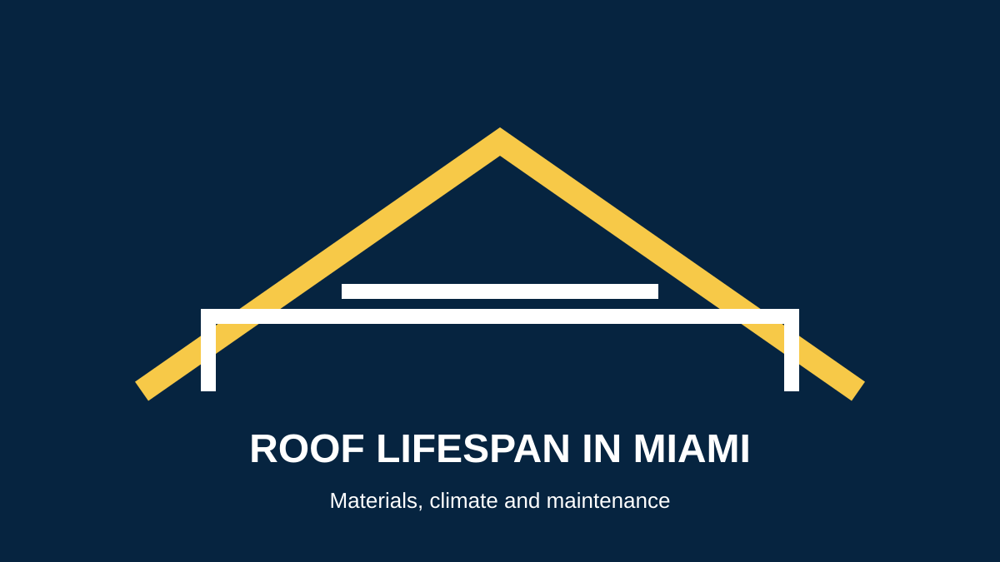
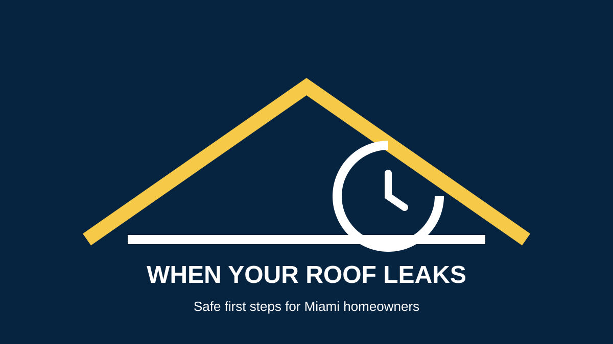
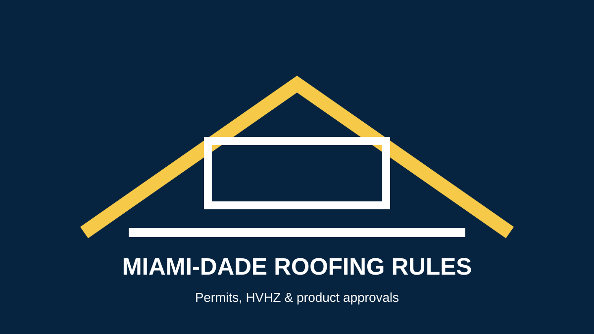
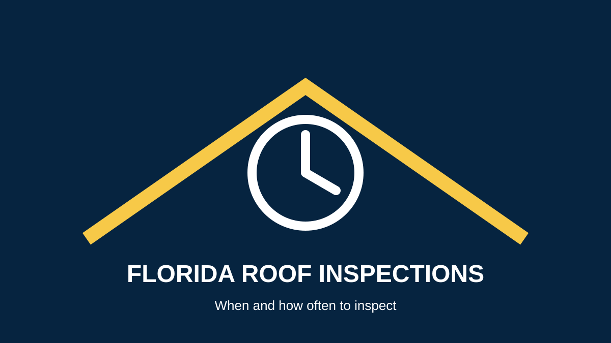
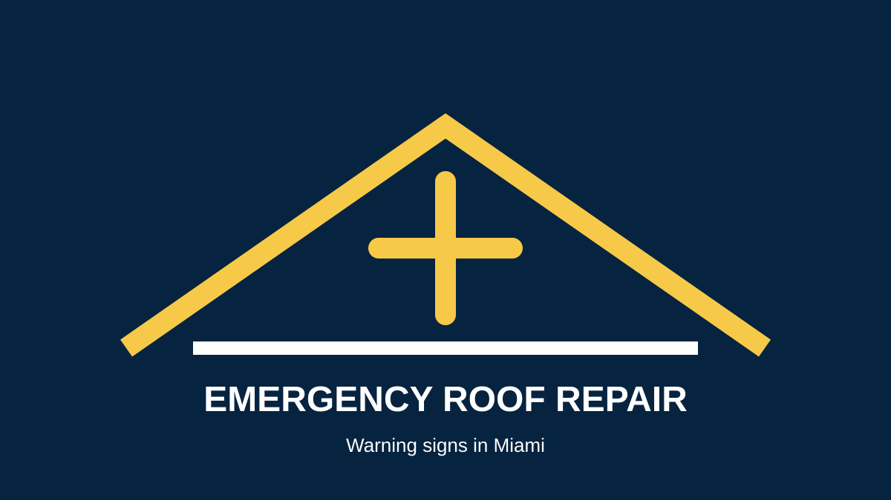

ROOF REPLACEMENT
How Much Does a Roof Replacement Cost in Miami?
Learn which factors affect the price of a new roof, from roof size and materials to access, condition and installation requirements.
Read article →Clear, practical guidance on roof repair, replacement, inspections, storm damage, insurance, roofing materials and long-term roof care in South Florida.
Browse our roofing articles by topic. Each guide is intended to help property owners understand common roofing problems, project decisions and maintenance needs before contacting a contractor.
Learn which factors affect the price of a new roof, from roof size and materials to access, condition and installation requirements.
Read article →
Understand the basic steps to document roof damage and work with your insurance company without assuming coverage is guaranteed.
Read article →
Know what to do after a storm, how to protect your property, document damage and arrange a professional assessment.
Read article →
Explore how heat, rain, humidity, storms, materials and installation quality affect roof life in South Florida.
Read article →
Learn the warning signs that can indicate a roof needs repair, further inspection or replacement.
Read article →
Simple first steps to limit interior damage while arranging professional roof leak repair.
Read article →
Compare common roofing choices for Miami properties and the factors that should guide your decision.
Read article →
A practical overview of why local code, permits and installation standards matter for roofing projects.
Read article →
Understand when routine and post-storm inspections make sense for Florida roofs.
Read article →
Identify urgent roofing problems such as active leaks, major storm damage and exposed roof areas.
Read article →Use our service pages to move from research to the next step when you need roofing help.
Miami roof repair · Miami roof replacement · emergency roof repair · commercial roofing · roof inspections
Read the guides, then contact Hyper Roof about your property.